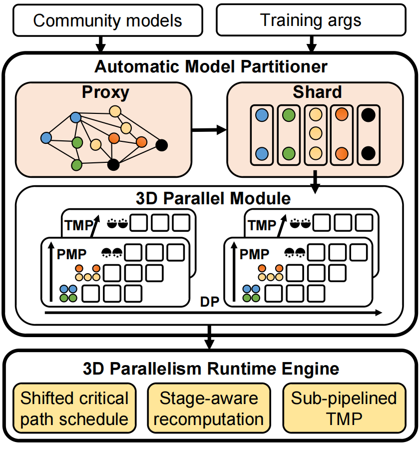
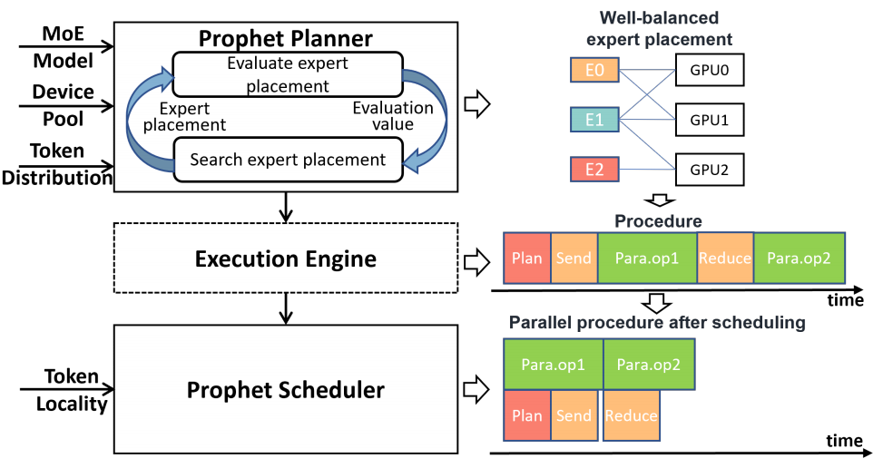
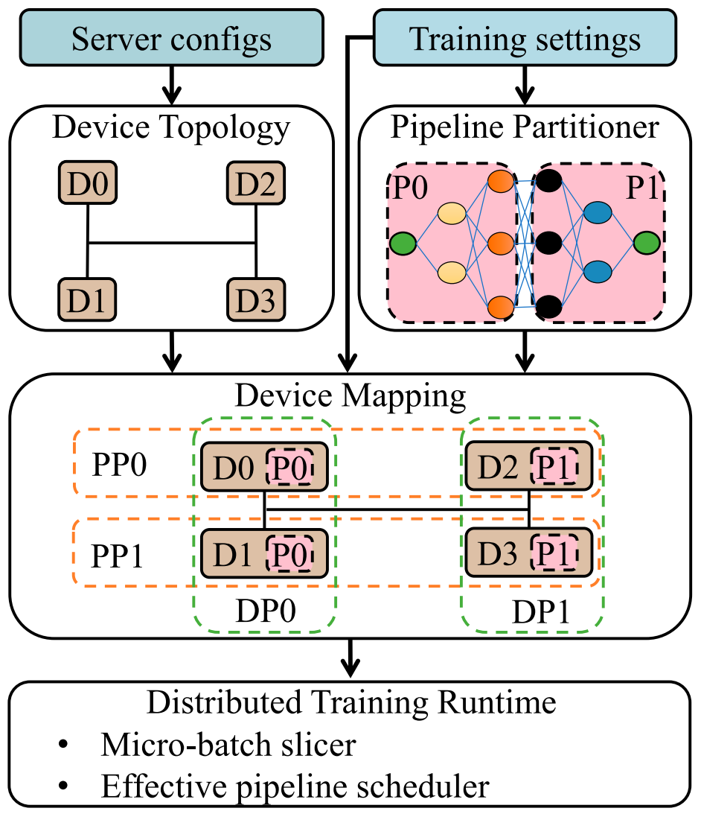
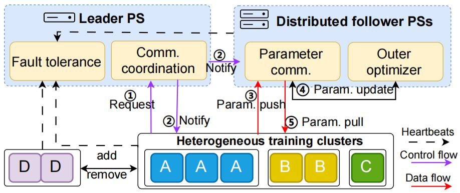

（三）面向智能模型的并行训练优化技术
(1)一种多维并行训练的自动化生成与优化技术
随着智能模型的参数量和训练数据量的爆炸式增长，GPT-3等大规模智能模型训练的内存使用量、计算量和通信量巨大，综合采用数据并行、流水线并行以及张量并行等方法的多维度并行训练方法成为大规模智能模型的主要手段。然而，现有Megatron-LM等方法针对特定模型进行定制化设计，需要并行训练专家和大模型算法设计专家共同参与训练代码的构建和优化，多维并行训练面临可编程性差、并行效率低的问题。

图1：多维并行训练的自动化集成优化技术
项目研究提出了一种面向大规模智能模型的多维并行训练自动化集成与优化技术，其核心是设计了多维并行智能训练框架，通过采用基于符号算子的自动多维划分、面向多维并行训练的参数通信优化等方法，提高了模型多维度并行训练的可编程性和并行效率，实现了数据、流水线与张量并行策略自动化集成优化。为提高大模型训练的可编程性，设计了一种基于符号算子的计算图切分方法，在模型划分前将大模型算子替换成符号算子，在保留大模型计算图结构信息条件下降低内存开销。为提高大模型训练的并行效率，设计了一种基于次级流水化的张量并行训练方法，在张量并行内的数据维度进行划分，将数据进一步分为独立的子数据，子数据间的计算和通信操作没有数据依赖关系，然后将子数据的操作进行流水化，从而实现通信和计算操作的互相重叠，提高了大规模并行训练的计算效率。在GPT等大规模智能模型上的对比实验结果表明，相比国际主流技术英伟达Megatron-LM，方法实现了1.46-1.57倍的并行训练性能加速。该研究为通用大模型的高效训练提供了一套完整的自动化解决方案。
(2)一种面向混合专家模型架构的并行训练优化技术
混合专家（Mixture of Experts，MoE）模型在自然语言处理等领域得到了很多应用。但在MoE模型的并行训练过程中，设备负载存在显著的动态不均衡现象，严重影响了MoE模型训练的吞吐量。主流系统级负载均衡方法利用资源分配操作来动态均衡负载，在不影响模型收敛的前提下较高地提升了训练速度，但仍面临因粗粒度视角及算子间紧密数据依赖所导致的通信冗余、资源分配开销大等问题。

图2：面向混合专家模型并行训练的负载均衡优化技术Prophet
项目研究提出了一种面向混合专家模型并行训练的负载均衡优化技术Prophet。Prophet首先定义一系列细粒度专家放置策略，为通信高效的负载均衡奠定基础。其次，Prophet引入一个性能模型，用以评测不同专家放置策略的优劣。最后，Prophet利用高效搜索算法快速找出负载较为均衡的专家放置策略，以减少负载均衡过程中存在的冗余通信。进一步地，Prophet利用样本分布的局部性预估专家负载，松弛了部分算子间数据依赖。在此基础上，Prophet将资源分配操作调度至智能计算设备的通信计算空闲处，以充分利用设备闲置时间减少资源分配开销。实验结果表明，与当前两个主流的MoE模型并行训练框架Deepspeed-MoE和FasterMoE相比，Prophet取得了1.05倍到3.22倍的并行训练性能提升。此外，相比系统级负载均衡方法FasterMoE，Prophet的负载均衡度最高可提升12.06倍。
(3)一种面向异构网络的协同智能计算优化技术
智能协同计算过程中，参与计算的设备需要周期性的进行通信，以保证协同计算结果与单机计算结果的一致性。智能计算集群的网络链路存在着异构性，这一异构性会带来通信竞争并影响协同计算性能。目前针对该异构性的研究将通信使用的网络链路分为结点内和结点间两类，结点内使用PCIe，结点间使用InfiniBand或者以太网。然而在部分智能计算集群的计算结点中，只有挂载在同一个CPU上的智能计算设备是只通过PCIe进行通信，挂载在不同CPU上的智能计算设备还需要经过CPU之间的QPI链路才能进行通信。

图3：基于网络链路异构感知的任务设备映射技术APH
项目研究提出了一种基于网络链路异构感知的任务设备映射技术APH，如图 11所示，其核心是通过对智能模型协同计算过程中的各类通信操作进行建模分析，确定了各类通信操作的通信量大小。结合各类通信操作的通信规模，APH可以得到通信操作在智能计算集群中的优先级。基于这一优先级，APH提出了数据并行优先的设备映射策略，通过将数据并行组映射到相邻的设备上，减少协同计算过程中的通信竞争，提高整体计算性能。实验结果表明，相较于随机的设备映射策略和流水线优先的设备映射策略，APH能够实现最大1.12倍的计算性能提高。该研究精准捕捉了智能计算集群的网络拓扑特性，为智能模型协同计算提供了高性价比的优化路径。
(4)一种面向跨异构计算集群的协同计算技术
随着大规模智能模型对计算资源的需求已逐渐超越单个计算集群的承载能力，需联合多个物理上独立的计算集群协同完成。然而，各集群在计算性能、网络带宽以及硬件可靠性方面存在显著异构性，当前的跨集群协同计算方法因依赖全局同步和去中心化的集合通信，面临着跨集群通信开销大、异步计算支持不足以及局部故障的容忍能力差等挑战。

图4：基于新型去中心化参数服务器架构的智能模型跨异构集群协同计算技术Di-PS
项目研究提出了一种基于新型去中心化参数服务器架构的智能模型跨异构集群协同计算技术Di-PS。Di-PS将模型计算过程解耦为内层与外层两个层次，每个集群内部独立维护一个优化器副本，自主执行高频的内层参数更新，从而减少对远程通信的依赖；集群间的外层同步则通过点对点通信实现，避免了集群间网络异构的影响，提升了系统整体的弹性与吞吐能力。此外，Di-PS实现了跨集群的故障隔离，任一集群发生故障时，其余集群可继续协同计算，显著增强了系统的容错能力。实验表明，相比现有的谷歌DiLoCo方法，Di-PS可将集群间通信效率提升1.39倍，并将整体外层同步过程加速1.21倍。该研究验证了跨集群协同训练在超大规模场景下的可行性，提供了一种可扩展、高容错、适应跨地域异构基础设施的新思路。
相关部分论文列表:
- Shengwei Li, Qiaoling Chen, Zhiquan Lai, Penglong Jiao, Wenwen Qu, Kun Cai, Jiaxing Li, Peng Sun, Xingcheng Zhang, Xiaoge Deng, Dongsheng Li, Kai Lu, Tianwei Zhang. Di-PS: System-Algorithm Co-Design for Asynchronous and Heterogeneous Cross-cluster LLM Training at Scale. USENIX NSDI 2026.
- Yu Tang, Lujia Yin, Qiao Li, Hongyu Zhu, Hengjie Li, Xingcheng Zhang, Linbo Qiao, Dongsheng Li, Jiaxin Li. Koala: Efficient Pipeline Training through Automated Schedule Searching on Domain-Specific Language. ACM TACO 2025.
- Weijie Liu, Kai Lu, Zhiquan Lai, Shengwei Li, Keshi Ge, Dongsheng Li, Xicheng Lu. AutoPipe-H: A Heterogeneity-Aware Data-Paralleled Pipeline Approach on Commodity GPU Servers. IEEE TC 2025.
- Shengwei Li, Zhiquan Lai, Dongsheng Li, Yanqi Hao, Weijie Liu, Keshi Ge, Xiaoge Deng, Kai Lu. Oases: Efficient Large-Scale Model Training on Commodity Servers via Overlapped and Automated Tensor Model Parallelism. IEEE TPDS 2025.
- Dongsheng Li, Shengwei Li, Zhiquan Lai, Yongquan Fu, Xiangyu Ye, Lei Cai, Linbo Qiao. A Memory-Efficient Hybrid Parallel Framework for Deep Neural Network Training. IEEE TPDS 2024.
- Shengwei Li, Kai Lu, Zhiquan Lai, Weijie Liu, Keshi Ge, Dongsheng Li. A Multidimensional Communication Scheduling Method for Hybrid Parallel DNN Training. IEEE TPDS 2024.
- Zhiquan Lai, Shengwei Li, Xudong Tang, Keshi Ge, Weijie Liu, Yabo Duan, Linbo Qiao, Dongsheng Li. Merak: An Efficient Distributed DNN Training Framework With Automated 3D Parallelism for Giant Foundation Models. IEEE TPDS 2023.